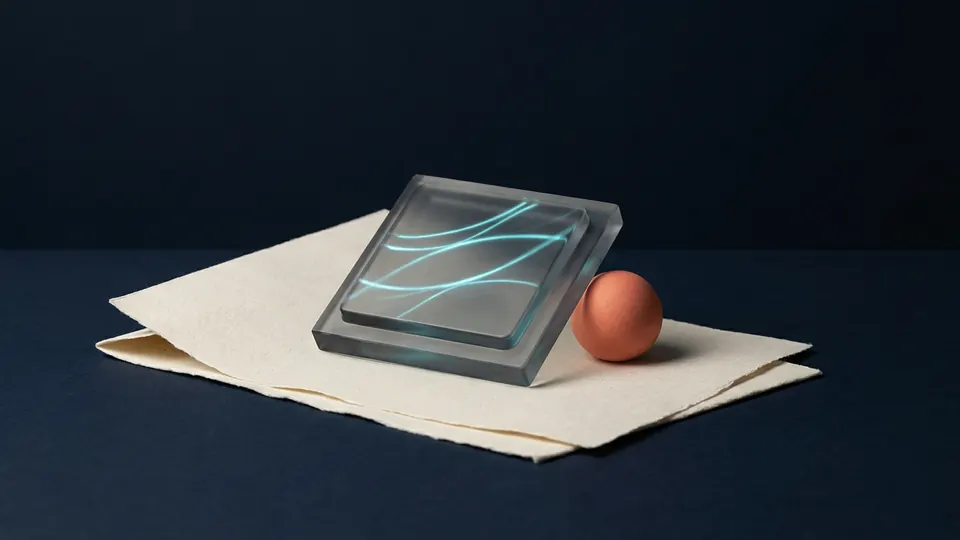
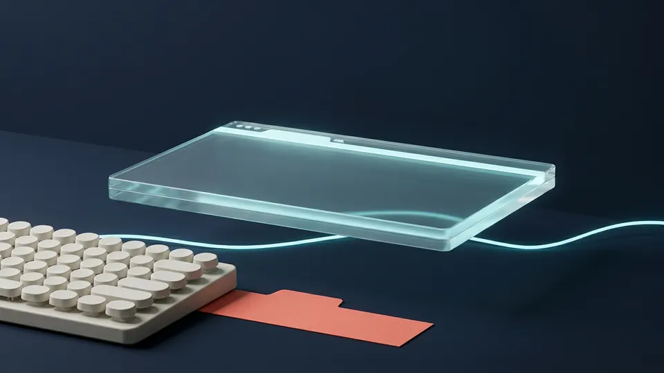
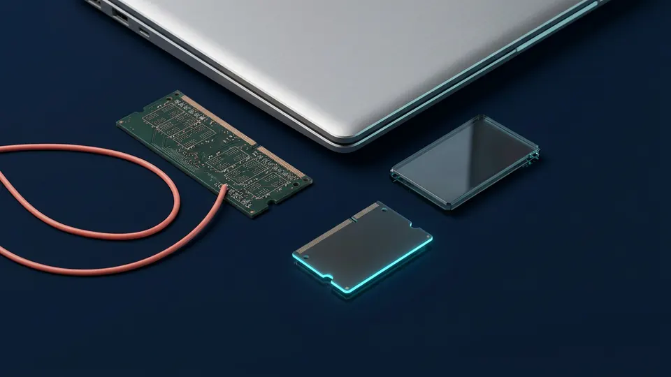
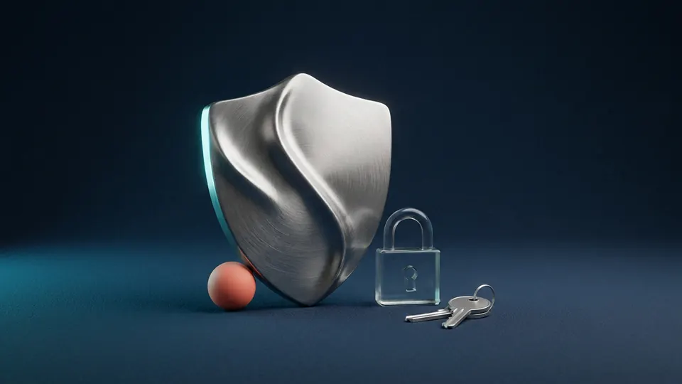

AI5 phút đọc
BẮT ĐẦU TỪ ĐÂY
Bắt đầu với AI: hỏi đúng, dùng hiệu quả hơn
Điều bạn mang theoMột yêu cầu tốt nói rõ việc cần làm, ngữ cảnh và hình thức đầu ra. Kết quả vẫn cần được kiểm tra.
Đọc bài này trướcCùng Tech Horizon bắt kịp công nghệ bằng góc nhìn dễ hiểu nhất. Khám phá AI, thủ thuật hữu ích, thiết bị và những thói quen an toàn trong thế giới số.
Một bài nên đọc trước, vài góc nhìn để đi tiếp. Chọn theo việc bạn cần và thời gian bạn có.
Điều bạn mang theoMột yêu cầu tốt nói rõ việc cần làm, ngữ cảnh và hình thức đầu ra. Kết quả vẫn cần được kiểm tra.
Đọc bài này trướcĐiều bạn mang theoRAM phục vụ công việc đang chạy; SSD hoặc ổ cứng lưu tệp lâu dài. Dung lượng của chúng không thay thế cho nhau.
Khám phá cẩm nangĐiều bạn mang theoWebsite tĩnh phục vụ các tệp đã chuẩn bị sẵn. Đăng nhập, dữ liệu chung hoặc gửi biểu mẫu thực sự cần dịch vụ bổ sung.
Khám phá cẩm nang3 gợi ý theo chủ đề và thời gian bạn chọn.
Một yêu cầu tốt nói rõ việc cần làm, ngữ cảnh và hình thức đầu ra. Kết quả vẫn cần được kiểm tra.
Mở cẩm nang ↗Chọn một chủ đề gần bạn.
Đi từ câu hỏi nhỏ tới điều có thể áp dụng.

Hiểu AI, ứng dụng đúng và làm chủ công cụ mới.

Những thao tác nhỏ, giúp một ngày nhẹ nhàng hơn.

Hiểu máy tính và mạng để sử dụng hiệu quả hơn.

Bảo vệ tài khoản, dữ liệu và sự riêng tư của bạn.
Một vài hiểu nhầm nhỏ vẫn thường gặp.
Chọn cách bạn nghĩ, rồi cùng mở lời giải.
16 cẩm nang dành cho bạn
Không cần những câu lệnh phức tạp. Một chút ngữ cảnh và một mục tiêu rõ ràng là khởi đầu tốt để làm việc cùng AI.
Một bên là mặt bàn làm việc, một bên là tủ hồ sơ. Hiểu đúng để đọc thông số máy tính tự tin hơn.
Một đường link lạ, một yêu cầu gấp, một lời hứa hấp dẫn. Tập thói quen kiểm tra trước khi bấm.
Dùng công cụ có sẵn, đọc kỹ danh sách và chỉ xóa thứ bạn hiểu. Một cách dọn máy có kiểm soát.
Bạn nhớ tên website. Máy tính cần địa chỉ IP. DNS giúp nối hai điều đó lại với nhau.
Mật khẩu riêng cho từng dịch vụ, một nơi quản lý đáng tin cậy và một lớp xác thực bổ sung.
Thử từ khóa khác hoặc khám phá tất cả bài viết.
Sáu công cụ cho một quy trình gọn hơn.
Hỏi rõ hơn, kiểm chứng tốt hơn, rồi áp dụng vào một công việc cụ thể.
Phân biệt bộ nhớ, ổ lưu trữ và những bước kết nối phía sau một trang web.
Tech Horizon bắt đầu từ một ý tưởng giản dị: công nghệ nên dễ hiểu hơn với mọi người.
Từ một khái niệm AI còn lạ, một thông số thiết bị khó đọc đến một thao tác nhỏ giúp bạn làm việc thuận tiện hơn — mỗi chủ đề là một cơ hội để hiểu thêm.
Bộ cẩm nang khởi đầu được biên soạn cho website. Nội dung này không phải bản sao các bài đăng trên Facebook.
Theo dõi Tech Horizon, cùng trao đổi những điều bạn tò mò và gợi ý chủ đề bạn muốn khám phá tiếp theo.
Liên kết Facebook chính thức đang chờ cập nhật.Một câu hỏi nhỏ của bạn có thể trở thành
chủ đề tiếp theo của Tech Horizon.
Dành cho những ai tò mò về công nghệ, kể cả khi bạn mới bắt đầu. Website ưu tiên kiến thức nền tảng, cách giải thích rõ và những việc có thể áp dụng trong cuộc sống số.
Bài đã lưu được giữ ngay trong trình duyệt bạn đang dùng. Chúng không tự đồng bộ sang thiết bị khác và có thể mất khi bạn xóa dữ liệu trình duyệt. Bạn có thể chia sẻ hoặc sao chép liên kết bài để lưu ở nơi khác.
Các cẩm nang hiện tại được biên soạn cho website. Website không tự truy cập tài khoản Facebook hoặc đồng bộ bài đăng. Khi có bài mới được cập nhật, bạn có thể đọc trong phần Cẩm nang.
Chuẩn bị nội dung qua ô gợi ý chủ đề phía trên rồi gửi cho kênh qua đường dẫn Facebook chính thức khi đã được cập nhật. Email liên hệ sẽ hiển thị nếu chủ kênh bổ sung.